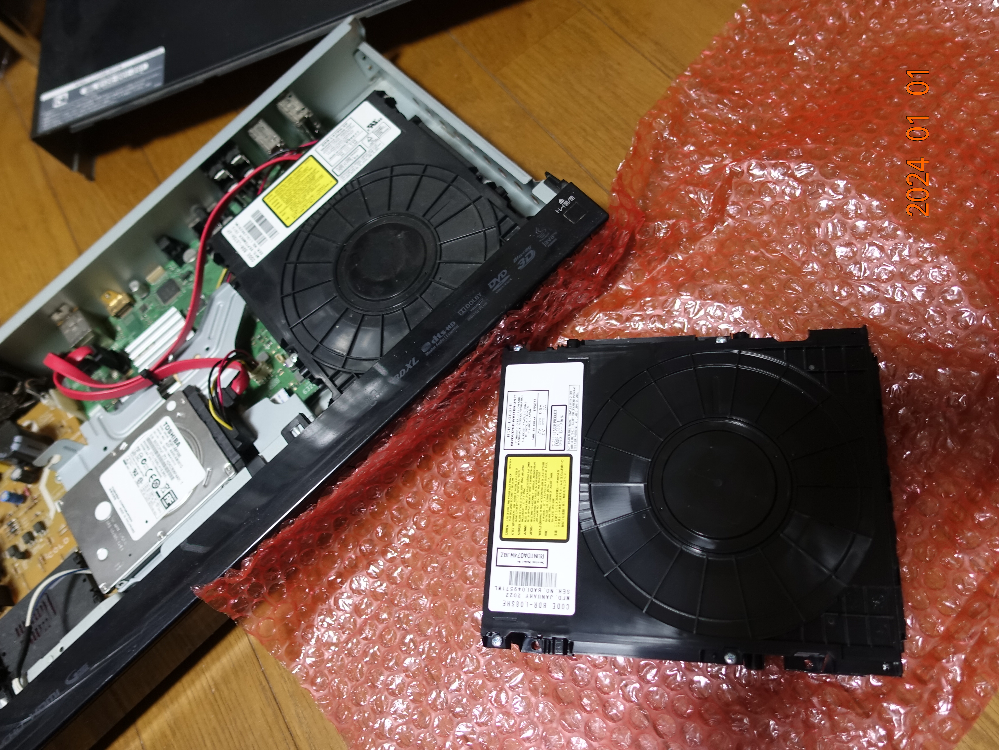

新年となりましたが、今年もよろしくお願いします。
喪中故にお年玉を配る事くらいしかしていないが、読書や絵を書き、テレビの特番放送を見るなどしてこの年末休みを楽しんでいる。壊れていたレコーダの光学ドライブも新調したので、溜まっていたビデオをダビングする事ができる。
このレコーダも結構長い間使っているわけだが。
チューナの数にも不満があったわけで、年内にもレコーダを新調したい所ではある。
今年のカレンダーは「Noぱんつ卓上スクールカレンダー」と「乳暦カレンダー」が手元にあるわけだが、如何せん「乳暦カレンダー」の絵柄がそんなにお好みではない故に「Noぱんつ」で決まりかなと思っているわけだが、こちらは４月以降しかないのだからこれはこれで困りもの。
そもそもカレンダーなんてのは季節や暦などを少しでも感じ、一つの文化として楽しむ為に使っているだけで特にカレンダーが必要というわけでもないので指して問題ではないだけれども考え物である。毎年卓上スクールカレンダーを用意すればきっと丁度いいのだろう。
今年は「プロジェクト X」が復活したり、「劇場版 魔法少女まどか☆マギカ」の新作が公開予定だったり、去年見に行きそびれた映画のビデオソフトがレンタルビデオショップに供給される等、今からそれなりに楽しみだ。
まだ年末休みは始まったばかりだ、さてはて、何を読み、どんなビデオを見ようか。買ったもののまだ読めていない美少女ゲームもまだまだある。せっかくの休暇なのだからしっかりと楽しみたいものである。
まぁ、今年も程々に頑張ろうと思う。
